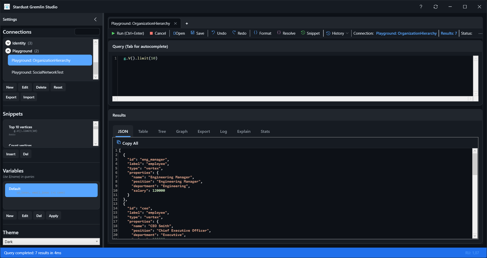
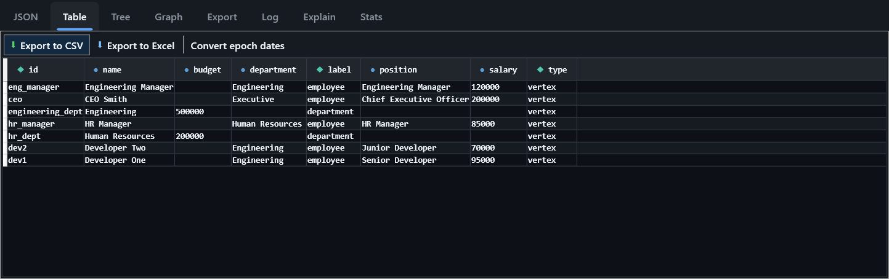

Stardust Gremlin Studio User Guide
Stardust Gremlin Studio is a free, open source Gremlin IDE for Azure Cosmos DB (Gremlin API), Apache TinkerPop Gremlin Server and JanusGraph. This guide covers everything from installation to advanced features such as variables, schema discovery and the MCP server for AI assistants.
1. Installation
System requirements
- Windows 10 or Windows 11 (x64)
- Network access to your Gremlin endpoint (port 443 for Cosmos DB, typically 8182 for Gremlin Server)
Install from release
- Open the latest release on GitHub.
- Download the setup executable and run it.
- Launch Gremlin Studio from the Start menu.
Build from source
git clone https://github.com/JonasSyrstad/Stardust.Paradox.git
cd Stardust.Paradox/src/StardustGremlinStudio/Stardust.Paradox.GremlinStudio
dotnet runRequires the .NET 10 SDK.
Updates
Gremlin Studio checks for new releases at startup. You can also click Check for Updates and then Download & Install.
2. The main window

- Connections panel (left) – saved connections organized in collapsible groups, plus snippets, variables and history.
- Toolbar – Run, Cancel, Open and Save.
- Query tabs – one editor per tab, each bound to a connection.
- Results area – JSON, Table, Tree, Graph, Export, Log, Explain and Stats tabs.
- Status bar – request charge (RU) of the last query for Cosmos DB.
On first launch a Welcome Guide walks you through the main features. Press Ctrl+Shift+P at any time to open the command palette and search for any command, or F1 for the keyboard shortcut reference.
3. Connections
Click New in the Connections panel to create a connection. Three connection types are supported:
| Type | Use for |
|---|---|
| Azure Cosmos DB (Gremlin API) | Cosmos DB accounts with the Gremlin API enabled |
| Generic Gremlin Server | Apache TinkerPop Gremlin Server, JanusGraph and other Gremlin-compatible servers |
| Local Playground (InMemory) | An in-memory graph for learning and testing, no server required |
Azure Cosmos DB
- Select Azure Cosmos DB (Gremlin API).
- Paste the connection string from the Azure Portal (Cosmos DB account → Keys → Primary Connection String).
- Click Discover Graphs. Databases and graphs are discovered automatically.
- Select the database and graph, then click Next and Create.
Tip: use Clone on an existing Cosmos DB connection to quickly add another graph in the same account.
Gremlin Server / TinkerPop / JanusGraph
- Select Generic Gremlin Server.
- Enter Host, Port (usually
8182), optional Username/Password, and enable Use SSL if required. - Click Next and Create.
- To verify connectivity, select the connection, click Edit and use Test.
Managing connections
- Use the buttons below the list: New, Edit, Delete, Clone (Cosmos DB only), Reset (Local Playground only), Export and Import (JSON).
- Connections are shown in collapsible groups. Right-click the list for Expand all groups / Collapse all groups.
- Press Ctrl+L to jump to the Connections panel.
4. Local playground
The playground is a built-in, in-memory Gremlin engine (powered by Stardust.Paradox.Data.InMemory). It is perfect for learning Gremlin, prototyping queries and demos.
- Create a Local Playground (InMemory) connection.
- Choose Empty Playground, or Predefined Scenario and pick one under Select Scenario.
- Run queries as you would against a real server.
Bundled scenarios: BasicSocialNetwork, SimpleECommerce, OrganizationHierarchy, UserRoleManagement, GraphTraversalTest, ODataTest and SocialNetworkTest. Select the connection and click Reset to restore the original data.
The playground is in-memory only. Changes are lost when you reset or close the application.
5. Query editor
Running queries
- Ctrl+Enter or F5 – run the whole editor.
- Ctrl+Shift+Enter – run only the selected text.
- Alt+Enter – run the statement under the cursor.
- Esc – cancel a running query.
Editing assistance
- Syntax highlighting and real-time validation for Gremlin.
- Auto-completion of Gremlin steps with Ctrl+Space (or Ctrl+J).
- Parameter hints with Ctrl+Shift+Space, and tooltips describing each step on hover.
- Format long traversals with Ctrl+Shift+F.
- Find / Replace with Ctrl+F / Ctrl+H.
- Ctrl+/ toggles comments, Ctrl+D duplicates a line, Alt+↑/↓ moves lines.
- Explain – the Explain tab shows a readable description of what a traversal does.
Example queries
// Count vertices by label
g.V().groupCount().by(label)
// Friends of friends
g.V().has('person','name','marko').out('knows').out('knows').dedup().values('name')
// Paths for visualization
g.V().hasLabel('person').outE().inV().path()6. Query tabs & files
- Ctrl+T new tab, Ctrl+W close tab, Ctrl+Tab / Ctrl+Shift+Tab switch tabs.
- F2 renames a tab. Right-click a tab for Duplicate, Close others and Close tabs to the right.
- Ctrl+O opens a query file (
.gremlinor.txt), Ctrl+S / Ctrl+Shift+S save / save as. - Open tabs and window layout are restored the next time you start Gremlin Studio.
7. Result views

| View | Shortcut | Description |
|---|---|---|
| JSON | Ctrl+1 | Raw JSON response. |
| Table | Ctrl+2 | Flattened tabular view. Copy with Ctrl+C or save as CSV / Excel. |
| Tree | Ctrl+3 | Hierarchical explorer for nested results, plus the Schema view. |
| Graph | Ctrl+4 | Interactive graph visualization. |
| Export | Scenario export (see below). | |
| Log | Executed queries with time, duration (ms), result count, RU and errors. | |
| Explain | Readable explanation of the query. | |
| Stats | Query statistics. |
Press Ctrl+Shift+K to pin the current result: the query and its results are copied into a new tab marked with a pin, so they are kept while you continue working.
8. Graph visualization
The Graph view renders vertices and edges returned by your query.
- Drag nodes to rearrange the layout.
- Zoom with Ctrl+mouse wheel. Pan by dragging the background or with Shift+mouse wheel.
- Click a vertex or edge to highlight it and show its properties.
Tip: queries that return path(), or both vertices and edges (for example g.V().outE().inV().path()), produce the richest visualizations.
9. Variables & parameters
Variable sets let you reuse values across queries and switch between environments. Manage them in the Variables panel with New, Edit and Del. The editor has Global and Connections tabs with key/value rows and a JSON preview.
Reference values in queries with ${key}, or nested values with ${path.to.value}:
g.V().has('tenant', '${tenant}')Apply previews the variable substitution without modifying the query. Ctrl+P (Resolve) replaces parameters in the editor text with their values.
10. Snippets
Snippets are named, reusable queries that you save yourself.
- Write a query in the editor.
- Click Save current query as snippet in the editor toolbar.
- Enter a name in the Save as Snippet dialog.
11. Query history
Every executed query is recorded with its connection and timestamp. Select an entry and press Enter to load it into the editor. Pin queries you use often so they stay at hand.
12. Schema discovery & code export
Gremlin databases are schemaless, so Gremlin Studio samples your graph to discover its structure:
- Open the Tree tab and select Schema.
- Gremlin Studio discovers vertex and edge labels, analyzes their properties and maps how labels connect.
- Browse the schema, or click Generate Code to create C# entity interfaces for Stardust.Paradox, the Entity Framework-style ORM for Gremlin. Copy the code or save it to a file.
[VertexLabel("person")]
public interface IPerson : IVertex
{
string Id { get; }
string Name { get; set; }
IEdgeCollection<IPerson> Knows { get; }
}13. Scenario export
Turn real data into reproducible test fixtures:
- Run a query that returns vertices.
- Open the Export tab and enter a Scenario Name and optional Description.
- Choose the Export Format: Json (loadable by the InMemory scenario loader) or CSharp (code that recreates the graph; set Namespace).
- Click Generate Preview, then Save to File...
Edges between the exported vertices are fetched and included.
14. MCP server (AI assistants)
Gremlin Studio ships with GremlinStudioMcp.exe, a Model Context Protocol server that gives AI assistants such as GitHub Copilot access to your saved connections.
Setup
In the settings panel (Ctrl+B), use one of the MCP install buttons:
- Install for Solution/Repo... – writes
.mcp.jsonand.vscode/mcp.jsonin the selected folder. - Install for Visual Studio (Global) – writes
%USERPROFILE%\.mcp.json. - Install for VS Code (Global) – adds the server under
mcp.serversin VS Codesettings.json.
The entry points to GremlinStudioMcp.exe in the Gremlin Studio installation folder:
{
"servers": {
"GremlinStudio": {
"type": "stdio",
"command": "<Gremlin Studio install folder>\\GremlinStudioMcp.exe"
}
}
}Available tools
| Tool | Description |
|---|---|
list_connections | List saved connections |
get_connection_details | Connection metadata (no secrets) |
execute_gremlin_query | Run a Gremlin query against a saved connection |
discover_graph_schema | Discover labels, properties and relationships |
export_schema_as_code | Generate Stardust.Paradox C# entity interfaces |
list_scenarios | List playground scenarios |
export_scenario | Export data as a JSON or C# scenario |
list_snippets / get_snippet | Access saved snippets |
list_query_history | Recent queries |
The MCP server runs locally and uses the same encrypted credentials as the application. Be careful when allowing an AI assistant to run write queries against production graphs.
15. Themes & settings
Open the settings panel with Ctrl+B.The theme selector is in the settings panel. Use Welcome Guide to replay the introduction and Check for Updates to look for a new version (updates are also checked at startup).
After signing in with GitHub, you can Report an issue and view My reported issues from within the application.
16. Keyboard shortcuts
| Shortcut | Action |
|---|---|
| Ctrl+Enter / F5 | Run query |
| Ctrl+Shift+Enter | Run selection |
| Alt+Enter | Run current statement |
| Esc | Cancel query |
| Ctrl+Space / Ctrl+J | Auto-completion |
| Ctrl+Shift+Space | Parameter hints |
| Ctrl+Shift+F | Format query |
| Ctrl+F / Ctrl+H | Find / Replace |
| Ctrl+/ | Toggle comment |
| Ctrl+D | Duplicate line |
| Alt+↑ / ↓ | Move line |
| Ctrl+Z / Ctrl+Y | Undo / Redo |
| Ctrl+P | Resolve parameters |
| Ctrl+T / Ctrl+W | New / close tab |
| Ctrl+Tab / Ctrl+Shift+Tab | Next / previous tab |
| F2 | Rename tab |
| Ctrl+O / Ctrl+S / Ctrl+Shift+S | Open / Save / Save as |
| Ctrl+1…4 | JSON / Table / Tree / Graph view |
| Ctrl+Shift+K | Pin result |
| Ctrl+L | Focus connections |
| Ctrl+Shift+P | Command palette | Toggle settings panel |
| F1 | Keyboard shortcut reference |
17. Data & security
All settings are stored locally in %LOCALAPPDATA%\GremlinStudio\:
| File | Contents |
|---|---|
connections.json | Connection metadata (no secrets) |
Secrets\ | Keys and passwords encrypted with Windows DPAPI (current user only) |
query-history.json | Query history |
snippets.json | Saved snippets |
variables.json | Variable sets |
session.json, window-layout.json | Open tabs and window layout |
theme.txt | Selected theme |
mcp-server.log | MCP server log |
Credentials are stored only on your machine, encrypted for the current Windows user.
18. Troubleshooting
Cannot connect to Cosmos DB
- Verify the account has the Gremlin API enabled and that you copied the full connection string including
AccountKey. - Check the Cosmos DB firewall allows your IP address.
- Outbound port 443 must be open.
Cannot connect to Gremlin Server
- Confirm host and port (default
8182) and whether the server requires SSL. - Select the connection, click Edit and use Test to see the exact error.
Graph view is empty
The graph view needs vertices and/or edges. Queries returning only values (for example values('name')) are shown in the JSON and Table views. Try adding path() or returning elements.
AI assistant does not see Gremlin Studio
Re-run the MCP install, restart your editor, and check %LOCALAPPDATA%\GremlinStudio\mcp-server.log.